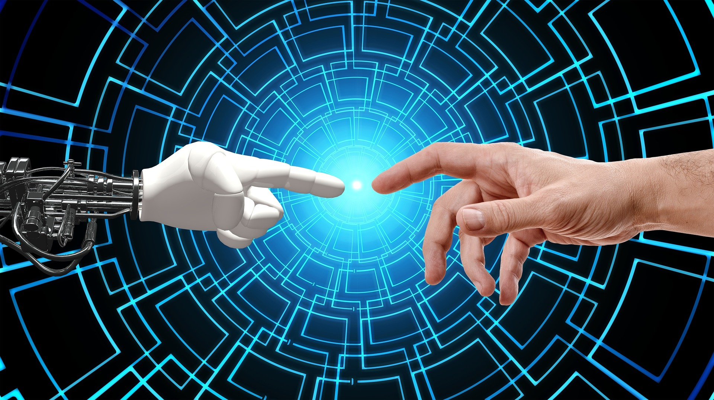

¿Qué es la Inteligencia Artificial?
Definición de Inteligencia Artificial
La inteligencia artificial (IA) es una disciplina dentro de la informática cuyo objetivo es crear sistemas que simulen la inteligencia humana, con capacidades como el aprendizaje, la resolución de problemas y la toma de decisiones.

La IA en la vida cotidiana
Desde los asistentes personales como Siri o Alexa hasta los coches autónomos, la inteligencia artificial está transformando nuestra vida diaria al automatizar tareas complejas y mejorar la eficiencia en diversas industrias.

Impacto de la IA
La IA no solo cambia la forma en que interactuamos con la tecnología, sino también cómo gestionamos procesos, como el análisis de grandes volúmenes de datos para obtener información útil y tomar decisiones más acertadas.
